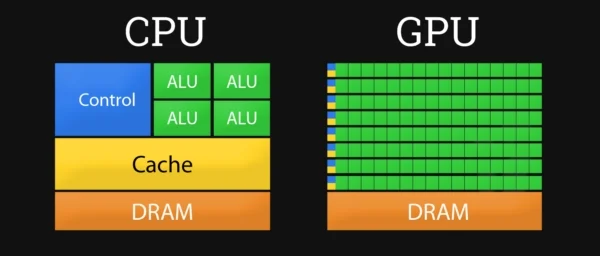
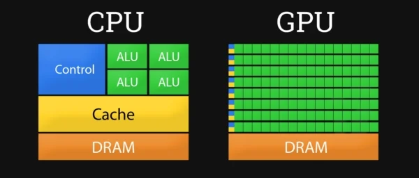

Устройство видеокарты
Видеокарта - практически отдельный компьютер, у неё есть свой "процессор", своя оперативная память. Ввиду многосоставности и сложности устройства не будем рассматривать каждый её компонент во всех подробностях. Обычно видеокарта выполнена в виде печатной платы и вставляется в слот расширения материнской платы, универсальный либо специализированный (AGP, PCI Express)
Видеокарта состоит из следующих компонентов:
Графический процессор (GPU)
Графический процессор (англ. Graphics processing unit - GPU) - устройство, которое занимается расчётами выводимого изображения (рендерингом), производя обработку 2D и 3D графики.
Графические процессоры по своему устройству схожи с центральным процессором компьютера тем, что состоят из тех же составных элементов, по сложности мало чем уступают ему, и зачастую превосходят по числу транзисторов.
GPU состоит из множества алгоритмически-вычислительных устройств, устройств управления, регистров, кэш-памяти (читайте подробнее в статьях про процессор).
Графический процессор отличается от центрального процессора в следующих аспектах:
-
Архитектура:
GPU содержат тысячи ядер в отличие от единиц или десятков в CPU, кэш-память ГП значительно меньше чем у ЦП.
-
Ограниченный набор команд:
Быстродействие увеличивается за счёт сокращения набора команд и их упрощения
Разница в архитектуре обусловливает и разницу в принципах работы. Если архитектура CPU предполагает последовательную обработку информации, то GPU исторически предназначался для обработки компьютерной графики, поэтому рассчитан на массивные параллельные вычисления. В отличие от CPU (Процессора) GPU значительно лучше справляется с расчётами чисел с плавающей запятой, поэтому видоекарты и используют при майнинге.
 

Видеопамять (VRAM)
Видеопамять (англ. video Random-Access Memory - VRAM) - это внутренняя оперативная память видеокарты, отведённая для хранения данных, которые используются для формирования изображения на экране монитора.
Видеопамять снабжает графический процессор всей информацией, необходимой для визуализаци и (рендеринга) изображения: текстурами, буферами кадров, картами теней, информацией об освещение и т.п. Видеопамять располагается на видеокарте в виде чипов стандарта GDDR (GDDR5 наиболее распространен), который основан на DDR (подробнее в статьях про оперативную память).
В качестве видеопамяти может использоваться и оперативная память компьютера, например, в том случае, когда её не хватает (или она отсутствует).
Видеопамять отличается от «обычной» системной ОЗУ более жёсткими требованиями к ширине шины, т.к. требуется одномоментно передавать множество данных. Графическая шина данных — это магистраль, связывающая графический процессор и память видеокарт.
Для видеокарты важна пропускная способность её памяти. Зачем улучшать графический процессор, если он простаивает, пока память передает данные? Пропускная способность видеопамяти есть произведение разрядности шины (количество каналов, по которым передаются данные) на тактовую частоту (количество сигналов за определенный промежуток времени)
Видеоконтроллер
Видеоконтроллер - устройство, управляющее формированием картинки в видеопамяти, обменом данными внутри видеокарты и с иными компонентами компьютера.
Видеоконтроллер даёт команды цифро-аналоговому преобразователю и осуществляет обработку запросов центрального процессора. Кроме этого, обычно присутствуют контроллер внешней шины данных, контроллер внутренней шины данных и контроллер видеопамяти. Ширина внутренней шины и шины видеопамяти обычно больше, чем внешней (64, 128 или 256 разрядов против 16 или 32), во многие видеоконтроллеры встраивается ещё и RAMDAC (цифро-аналоговый преобразователь).
Графические адаптеры (AMD, nVidia) обычно имеют не менее двух видеоконтроллеров, работающих независимо друг от друга и управляющих одновременно одним или несколькими дисплеями каждый.
Цифро-аналоговый преобразователь
Цифро-аналоговый преобразователь (ЦАП; RAMDAC — Random Access Memory Digital-to-Analog Converter) — устройство, служащее для преобразования изображения, формируемого видеоконтроллером, для последующего вывода на аналоговый монитор.
Широко говоря, цифро-аналоговый преобразователь — устройство для преобразования цифрового (двоичного) кода в аналоговый сигнал.
Современные ЦАП создаются по полупроводниковым технологиям в виде интегральной схемы. Возможный диапазон цветности изображения определяется только параметрами RAMDAC. Чаще всего RAMDAC имеет четыре основных блока: три цифро-аналоговых преобразователя, по одному на каждый цветовой канал (красный, зелёный, синий — RGB), и SRAM для хранения данных о гамма-коррекции. Большинство ЦАП способно отображать до 16,7 млн цветов.
TMDS (Transition-minimized differential signaling — дифференциальная передача сигналов с минимизацией перепадов уровней) - передатчик цифрового сигнала без ЦАП-преобразований. Используется при DVI-D, HDMI, DisplayPort подключениях. С распространением ЖК-мониторов и плазменных панелей нужда в передаче аналогового сигнала отпала — в отличие от ЭЛТ они уже не имеют аналоговую составляющую и работают внутри с цифровыми данными. Чтобы избежать лишних преобразований, придумали TMDS.
Видео-ПЗУ
Видео-ПЗУ (Video ROM) — постоянное запоминающее устройство (ПЗУ), в которое записаны BIOS видеокарты, экранные шрифты, служебные таблицы и т. п. ПЗУ не используется видеоконтроллером напрямую — к нему обращается только центральный процессор.
BIOS обеспечивает инициализацию и работу видеокарты до загрузки основной операционной системы, задаёт все низкоуровневые параметры видеокарты, в том числе рабочие частоты и питающие напряжения графического процессора и видеопамяти, тайминги памяти. На многих картах устанавливаются электрически перепрограммируемые ПЗУ (EEPROM, Flash ROM), допускающие перезапись видео-BIOS самим пользователем при помощи специальной программы.
Интерфейс
Интерфейс — стандартизированный разъем, обеспечивающий свзяь видеокарты с остальными компонентами компьютера.
Видеокарта через интерфейс подключается к материнской плате (а значит и ко всему компьютеру).
Первое препятствие к повышению быстродействия видеосистемы — это интерфейс передачи данных видеоадаптера. Как бы ни был быстр процессор видеоадаптера, большая часть его возможностей останется незадействованной, если не будут обеспечены каналы обмена информацией между ним, центральным процессором, оперативной памятью компьютера.
В результате развития интерфейс пришел к нынешнему стандарту PCI Express (PCIe) (основанному на наработках PCI). Сейчас используются версии 3.0 и 4.0, 5.0 мало используется на практике, 6.0 - в разработке.
Для сравнения:
PCIe 3.0: скорость передачи одной линии равна 8 ГТ/с (Гигатранзакций/с), пропускная способность равна 0,985 ГБайт/с (для 1 линии)
PCIe 4.0: скорость передачи одной линии равна 16 ГТ/с, пропускная способность равна 1,969 ГБайт/с (для 1 линии)
Устройства PCI Express взаимодействуют между собой через среду, образованную коммутаторами, при этом каждое устройство напрямую связано соединением типа точка-точка с коммутатором. (Коммутатор - устройство, соединяющее несколько информационных узлов). PCI Express, в общем случае, является пакетной сетью с топологией типа звезда (см. подробнее в статьях про компьютерные сети).
Коннектор
Коннектор — разъём, с помощью которого видеокарта подключается к устройству графического вывода (монитору).
На разных мониторах стоят разные разъемы, которые могут не совпадать с разъемами видеокарты, тогда для подключения используют переходники.
Сейчас активно используются следующие типы коннекторов:
VGA - аналоговый разъем, был изобретен в 1987 IBM, со временем стал универсальным аналоговым интерфейсом дисплеев. До сих пор активно применяется. Макс. разрешение: 2048×1536, 85 Гц
DVI - аналоговый или цифровой (в зависимости от типа) разъем, был изобретен в 1999. Повсеместно использующийся компьютерный интерфейс. Передаётся только несжатое видео. Макс. разрешение: 2560×1600, 60 Гц
HDMI - цифровой разъем, был изобретен в 2003. Используется в множестве A/V систем и видеокартах. Может передавать аудио. Обязательно шифруется с помощью HDCP (защита от копирования высококачественного сигнала). Макс. разрешение: 2560 x 1600, 75 Гц
DisplayPort - цифровой разъем, был изобретен в 2007. Используется в мониторах Apple Inc. и DELL. Поддерживает HDCP. DisplayPort позволяет подключать до четырёх устройств ввода-вывода. Может передавать аудио. Макс. разрешение: 2560×1600, 75 Гц
Система охлаждения
Система охлаждения - система предназначенная для сохранения температурного режима видеопроцессора и (зачастую) видеопамяти в допустимых пределах.
Чаще всего представляет из себя от одного до трех вентиляторов с радиатором (от этого зависит и размер видеокарты), или в случае маломощных видеокарт радиатор пассивного охлаждения. Чем мощнее видеадаптер, тем больше нужно отводить тепла от него за секунду времени во избежание перегрева и поломки.
Также от видеокарты может отводиться тепло засчёт жидкостной системой охлаждения. Это дорогой, но эффективный вариант, не зависящий от циркуляции воздуха внутри корпуса компьютера. В этом случае жидкость нагревается видеокартой, переносится по трубкам к внешним вентиляторам компьютера, где охлаждается, и снова поступает к видеоадаптеру. Обычно применяется для мощных видеокарт с внушительным тепловыделением.
Заключение
Видеокарта - важная составляющая любого персонального компьтера, без неё мы просто не сможем взаимодействовать с ПК. А если хочется посмотреть фильм в хорошем качестве? Можно подключить телевизор к компьютеру и видеокарта будет обрабатывать изображение уже для большого экрана, но не стоит забывать, что чем выше разрешение экрана, тем мощнее нужна графическая карта для комфортного пользования.
Видеокарта - очень сложное и комплексное устройство, практически компьютер в компьютере. Зачастую, именно графическая карта потребляет наибольшее количество энергии в ПК, и как следствие греется больше всего. Поэтому важно обеспечить воздухом внутреннее пространство корпуса, а также при выборе блока питания необходимо учесть мощность, потребляемую видеокартой.
Часть 2 - Типы видеоадаптеров